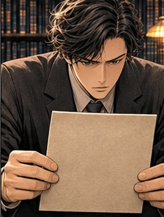
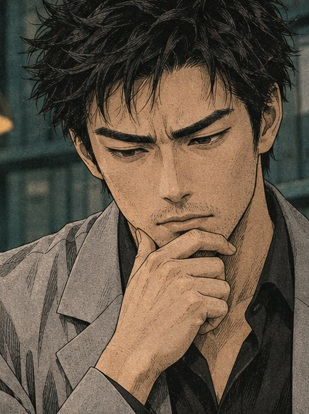
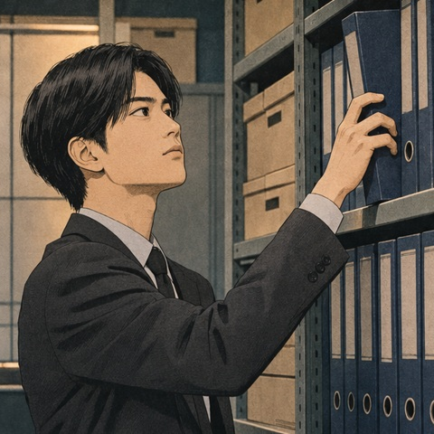
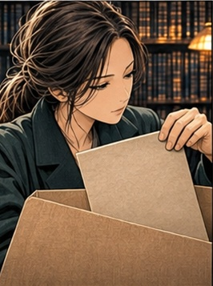
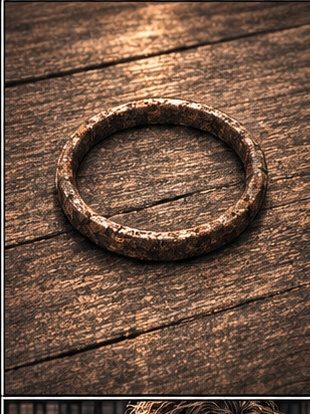
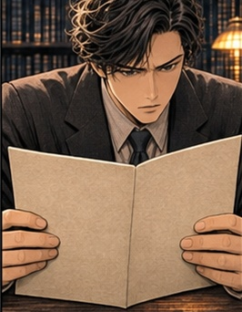
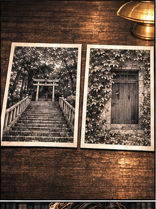
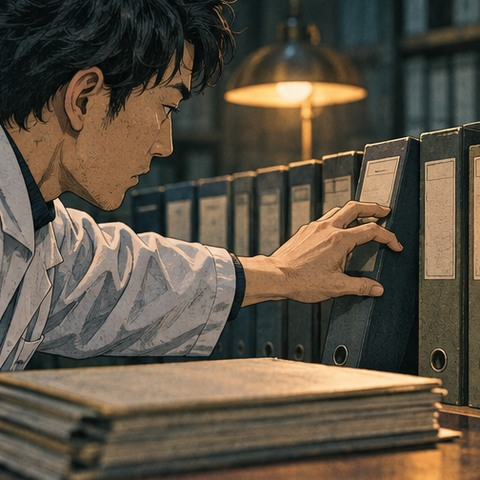
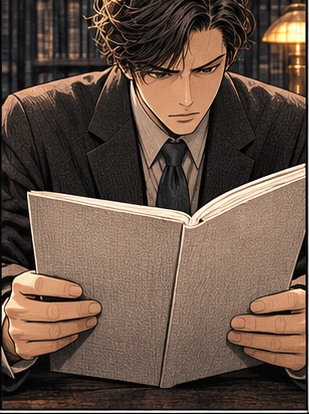
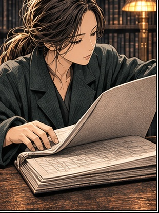

漫画版
第十八話「発見時」

資料室・公開資料の撮影時点
「発見時」の写真なのに、鉄の輪が床から浮いてます。

手袋で持ち上げてる。床にあったときの写真も探そう。

公開資料の見出し「発見時」
1 / 4
朝倉は保管棚から回収票の綴りを抜いた。


この綴りです。撮影番号を見てください。

元の撮影一覧にある写真・輪は床板の上

撮影一覧でも、床にある輪が先。公開されたのは、その後の写真です。
2 / 4

見出しは「発見時」。でも、この写真は回収後ね。
回収前
回収後3 / 4
回収票を脇へ寄せ、今度は最終報告の記録を手元に引き寄せた。


なら、最終報告の男の写真は、いつ撮ったことになってますか。

この写真には撮影時刻が書かれていない。背景から部屋を特定して、元の写真を探そう。
4 / 4